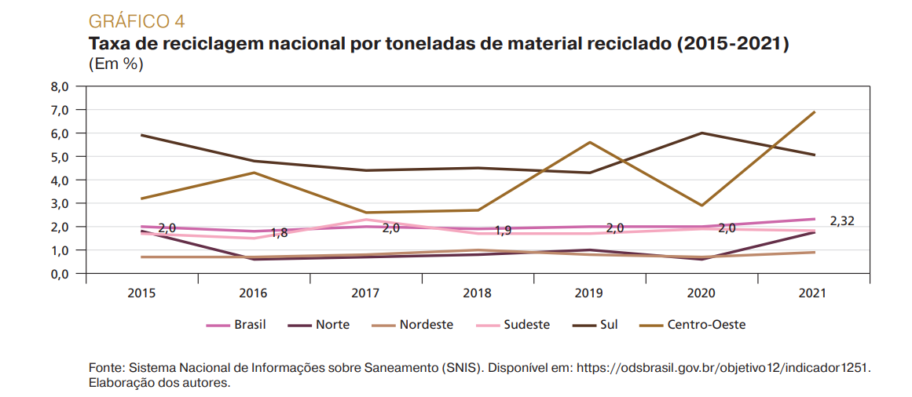

Sobre o Projeto
Este projeto tem como objetivo promover uma educação inclusiva e de qualidade, além de conscientizar sobre o consumo e produção responsáveis, alinhando-se aos Objetivos de Desenvolvimento Sustentável da ONU (ODS 4 e 12).
Educação Inclusiva (ODS 4)
O que é educação inclusiva? Educação inclusiva é garantir que todas as pessoas, independentemente de suas condições, tenham acesso a uma educação de qualidade, em ambientes acessíveis e acolhedores.
Desafios enfrentados por pessoas com deficiência:
- Falta de acessibilidade nas escolas
- Ausência de tecnologias assistivas
- Preconceito e discriminação
Tecnologias Assistivas: São recursos que ajudam pessoas com deficiência a aprender e se comunicar, como leitores de tela, legendas, intérpretes de Libras, entre outros.
O vídeo abaixo traz uma breve explicação sobre o assunto (exemplo):
Consumo e Produção Responsáveis (ODS 12)
O que é consumo responsável? Consumo responsável significa fazer escolhas conscientes para diminuir o impacto ambiental e social, evitando desperdícios e promovendo sustentabilidade.
Dicas para reduzir desperdício:
- Compre apenas o necessário
- Reutilize e recicle materiais
- Evite produtos descartáveis
- Economize água e energia
Gestão de resíduos: Separe o lixo corretamente e destine os resíduos para reciclagem ou descarte adequado.
Impacto Ambiental do Consumo
Nossas escolhas diárias afetam o planeta. Entenda os impactos de alguns hábitos comuns:
- Uso excessivo de plástico: Leva centenas de anos para se decompor e polui oceanos.
- Desperdício de alimentos: Estima-se que 30% da comida produzida no mundo é desperdiçada.
- Fast fashion: A indústria da moda é responsável por 10% das emissões globais de CO2.
Repensar nossos hábitos é essencial para garantir um futuro sustentável.
O Que Você Pode Fazer
Pequenas ações fazem grande diferença! Aqui estão algumas atitudes que você pode tomar:
- Compartilhe conhecimento sobre educação inclusiva com colegas e familiares.
- Participe de eventos e campanhas que defendam os direitos das pessoas com deficiência.
- Reduza, reutilize e recicle no seu dia a dia.
- Escolha produtos de empresas comprometidas com a sustentabilidade.
- Incentive sua escola ou empresa a adotar práticas mais acessíveis e ecológicas.
Você Sabia?
- Mais de 90% das pessoas com deficiência no mundo não têm acesso à educação adequada.
- A reciclagem de uma tonelada de papel economiza 20 mil litros de água.
- As metas do ODS 4 incluem garantir acesso igualitário à educação técnica e superior até 2030.